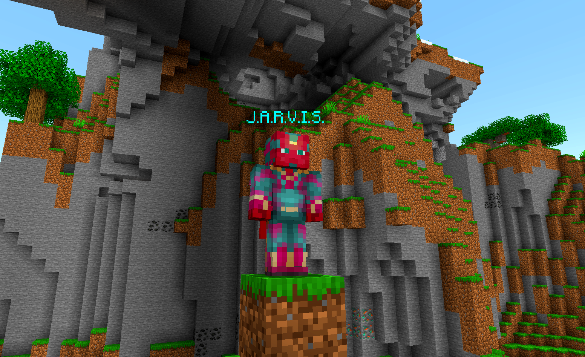
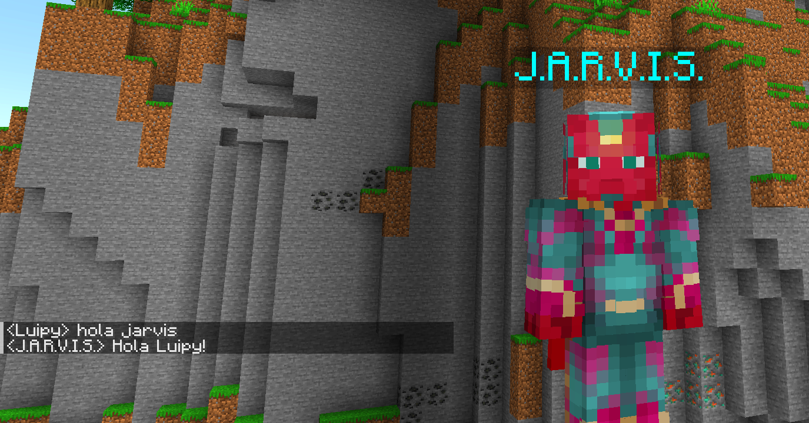

Quiéres aprender a programar tu propio bot y que sea capaz de minar o atacar automáticamente?
Con este tutorial aprenderás a crear y configurar tu propio bot para servidores de Minecraft que funcione incluso en vanilla sin tener que usar plugins.
Antes de empezar, recuerda que cada servidor tiene sus normas. Respeta y utiliza los bots con cautela.
Para poder crear nuestro propio bot de Minecraft, primero deberemos decidir en qué lenguaje lo crearemos, en este caso será en javascript utilizando la librería "mineflayer", una herramienta muy potente que además funciona en las últimas versiones
Si no sabes cómo crear tu propio servidor de Minecraft, te recomiendo ver este otro tutorial: /To Be Continued/
Para que el bot funcione necesitaremos instalar Node.js y npm para poder configurar y lanzar el bot.
# Actualizar la lista de paquetes
sudo apt update
# Instalar Node.js y npm
sudo apt install nodejs npm
# Verificar la instalación de Node.js y npm
node -v
npm -v
En caso de utilizar Windows, deberás descargar el instalador de Node.js desde su página oficial e instalarlo.
Actualmente, las versiones que necesitas para que la librería funcione son:
node -v
v18.X.X
npm -v
10.7.X
En caso de que la librería necesite una versión distinta, al lanzar el bot, se te comunicará por consola la versión en concreto que necesitas instalar.
En Ubuntu, crea y ve hacia el directorio donde desees trabajar, por ejemplo:
# La birgurilla "~" apunta al home de tu usario ej. "/home/Luipy"
mkdir ~/mcBot
cd ~/mcBot
En caso de estar en Windows, crea la carpeta como lo harías siempre, apartir de aquí los pasos tanto en Ubuntu como en Windows son iguales.
Antes de instalar mineflayer, tenemos que iniciar un proyecto de Node.js para que cree nuestros archivos de configuración. Para ello, desde la terminal y asegurándote estar en el directori/carpeta correcta, ejecuta el siguiente comando:
npm init -y
Veremos que se nos han creado un par de archivos y una subcarpeta llamados "package.json", "package-lock.json" y la carpeta "node_modules". Ahora ya podemos descargar la librería, recuerda ejecutar todos estos comandos dentro de la carpeta que hemos creado.
npm install mineflayer
Abre el archivo "package.json", dentro deberías ver algo así:
//package.json
{
"name": "NOMBREDELBOT",
"version": "1.0.0",
"description": "",
"main": "NOMBREDELARCHIVO.js",
"scripts": {
"test": "echo \"Error: no test specified\" && exit 1",
"start": "node server.js"
},
"keywords": [],
"author": "",
"license": "ISC",
"dependencies": {
"axios": "^1.7.2",
"body-parser": "^1.20.2",
"express": "^4.19.2",
"mineflayer": "^4.20.1",
"socket.io": "^4.7.5"
}
}Cambia "NOMBREDELBOT" por el nombre que quieras ponerle a tu bot, comillas incluidas, y NOMBREDELARCHIVO por el nombre que quieras ponerle al archivo de programación de tu bot, por ejemplo: "J.A.R.V.I.S." y "bot.js" respectivamente.
A continuación verás los mínimos que tiene que tener la programación de tu bot para funcionar correctamente.
//bot.js
const mineflayer = require('mineflayer');
const bot = mineflayer.createBot({
host: 'IPDelServidor',
port: PuertoDelServidor,
username: 'NombreDelBot',
}); Asegúrate de cambiar la IPDelServidor por la IP de tu servidor, comilla ' ' incluida, junto al puerto del servidor y el nombre del bot. Si el bot y el servidor están en el mismo host, puedes utilizar 'localhost' en su lugar.
Cómo saber qué puerto utiliza mi servidor?
Utilices un host como Aternos o tu propia máquina, puedes comprobar el puerto que está utilizando el servidor mirando en el archivo "server.propierties", donde saldrá especificado en la entrada: "server-port=NºDelPuerto", supongamos que es:
//server.propierties
server-port=25565
25565 será el puerto que utilizaremos en la configuración del bot.
Como ejemplo:
//bot.js
const mineflayer = require('mineflayer');
const bot = mineflayer.createBot({
host: 'localhost',
port: 25565,
username: 'J.A.R.V.I.S.',
});
Ten en cuenta que NO todos los servidores permiten que bots como este entren, por lo que te recomiendo NO intentar conectarlo a un servidor público cualquiera.
Para lanzar el bot, deberémos usar el siguiente comando
node bot.js
En caso de que npm o node no funcionen, reinicia la shell o sigue los pasos que se te han indicado en la terminal al instalarlos.
Si todo lo has hecho correctamente, el bot se unirá automáticamente en al servidor
Es importante destacar que el servidor debe de ser NoPreomium, es decir, que en la configuración del servidor especifique lo siguiente:
//server.propierties
online-mode=falseEsto debe de ser así ya que de lo contrario, el servidor intentará validar la sesión del player resultando en un error de validación.
Ahora que nuestro bot funciona correctamente, es hora de programarlo para que haga cosas por nosotros.
Este apartado será un poco más técnico ya que iremos directamente al código. Empezaremos por hacer que el bot sea capaz de entender algunas frases que los demás jugadores digan por el chat del juego. Para ello utilizaremos algo tan simple como una función IF, con lo que podremos filtrar frases que digan los jugadores para que el bot realice acciones.
Ten en cuenta que las líneas que empiecen por "//" son comentarios y no afectan a la programación del bot más que para facilitar su lectura a la hora de entender el código.
Recuerda que poniendo el ratón encima del bloque de código en la web y manteniendo presionada la tecla "Shift" podrás mover la página horizontalmente para leer mejor el código.
//bot.js
const mineflayer = require('mineflayer');
const bot = mineflayer.createBot({
host: 'localhost',
port: 25565,
username: 'J.A.R.V.I.S.',
});
//Iniciaremos el bloque de mensajes:
//La función siguiente permitirá al bot "leer" los mensajes del chat y almacenar en variables tanto el nombre del jugador ("username") como el mensaje que ha sido enviado ("message")
//Este proceso nos permitirá automatizar tareas y activarlas simplemente escribiendo en el chat del juego
bot.on('chat', (username, message) => {
//Comprobamos con un IF que el nombre del jugador NO es el del bot, para que no se confunda y no pueda responderse a sí mismo
if (username === bot.username) return;
//Opcionalmente, imprimimos los mensajes de los jugadores en la consola del host
console.log(`${username}: ${message}`);
//Transformaremos cualquier mensaje a minúsculas para facilitar su procesamiento
message = message.toLowerCase();
//Cambio de hora
//Vamos a programar ahora un "IF" que verificará si las palabras que dice el jugador
//coinciden con una frase específica. Esto significa que si alguien escribe esa frase
//en el chat, la condición del "IF" cumplirá ejecutando la acción asociada.
if (message.includes('hola jarvis')) {
//De esta manera, cada vez que un jugador diga la frase "hola jarvis"
//Esta nombre "jarvis" no tiene nada que ver con el nombre del bot en la configuración
//Podríamos poner "Pepito" y seguiría funcionando
//Por último utilizaremos una propiedad del objeto bot, para que escriba en el chat
bot.chat(`Hola ${username}!`);
//Todo lo que haya dentro de los paréntesis lo dirá el bot por el chat,
//incluso si es un comando
//Para concretar más, he utilizado el acento ` para poder poner
//variables dentro de al función
//De esta manera podemos usar la variable "username" para que el bot diga
//el nombre del jugador que le ha llamado
}
});Consideras que los comentarios, es decir, la explicación del código, son difícilis de leer de esta manera? Crees que sería mejor dividir el código en trozos y explicarlo en un párrafo normal? Dame tu feedback por discord! Enlace a Discord
Gracias a esto, el bot nos entenderá cuando digamos "hola jarvis" por el chat.
Como en nuestro "IF" estamos utilizando la funcion "includes", no hace falta que digamos específicamente "hola jarvis", podríamos decir "Anda, Hola Jarvis, qué tal?" y seguiría funcionando correctamente.
A raíz de esto, podríamos hacer infinidad de cosas y activarlas simplemente con decírselo por el chat, como si fuera un jugador más en el servidor.
Aquí te dejo otro ejemplo donde con un poco más de lógica, Jarvis nos pondrá en el modo de juego que queramos.
//Dentro de la función de lectura del chat
//Cambio de gamemode
//Verificamos que el jugador diga "jarvis ponme en" o "jarvis ponte en" para activar la función
if (message.includes('jarvis ponme en') || (message.includes('jarvis ponte en'))) {
//Extraemos la última palabra que haya dicho el jugador. La intención es que este diga:
//"jarvis ponme en creative"
//El código aislará la última palabra de la frase "creative" y la guardará como la variable "gamemode"
let gamemode = message.split(' ').pop();
//Hemos declarado la variable como let para que, una vez el bloque IF termine, la variable se borre ahorrando espacio en memoria
//Comprobaremos si la palabra que ha dicho en el jugador es un modo de juego válido en Minecraft, luego te explicaré cómo
if (gamemodeS.includes(gamemode)){
//Confirmamos que ha funcionado haciendo que el bot diga algo por el chat
bot.chat(`Por supuesto ${username}.`);
//Diferenciamos en si el jugador ha dicho "ponte" o "ponme"
if (message.includes('jarvis ponte en')) {
//En caso de ponte, el bot cambiará de modo de juego
bot.chat(`/gamemode ${gamemode} ${bot.username}`);
}else{
//De lo contrario, cambiará el modo al jugador que haya escrito el comando
bot.chat(`/gamemode ${gamemode} ${username}`);
}
}else{
//Si el jugador ha dicho un modo de juego NO válido, el bot dirá:
bot.chat(`Lo lamento ${username}, pero no te he entendido`);
}
}
Como podrás ver en el código, se está comprobando si el gamemode que ha dicho el jugador, está dentro de un array.
Este array podemos declararlo como una variable constante al principio de nuestro archivo:
//bot.js
const gamemodeS = ["creative","spectator","survival","adventure"]
//Resto del códigoSi el jugador dice una de las palabras que hay dentro del array, la condición del "IF" se cumplirá.
Recuerda que los "IFs" que quieras que detecten lo que dice el jugador por el chat, deben de estar dentro de la función principal donde el bot lee el chat:
//función de lectura
bot.on('chat', (username, message) => {
//Tu código aquí
});Ten en cuenta, que este código es muy simple y no cuenta con un buen manejo de errores e incluso no sería capaz de lanzar los comandos si le decimos el modo de juego en Español.
Para solucionar esto, podríamos introducir un array asociativo que al decirle "creativo", o cualquier modo de juego, el programa lo "tradujera automáticamente" al inglés.
A continuación veremos un ejemplo donde utilizo esta idea. El bot será capaz de cambiar la hora del juego aún diciéndoselo en Español.
//bot.js
//Primero crearemos el array asociativo como una constante
const traduccionDeHoras = {
'noche': 'night',
'día': 'day',
};
//Resto del código//Dentro de la función de lectura del chat
//Cambio de hora
if (message.includes('jarvis haz que sea de')) {
//Volvemos a pedirle que verifique si el jugador ha dicho una frase en concreto
let time = message.split(' ').pop();
//Volvemos a separar la última palabra de la frase y la declaramos como "time"
//Comprobamos si la palabra está dentro del array
if (traduccionDeHoras.hasOwnProperty(time)){
//El bot ejecute el comando por el chat utilizando el valor que
//ha especificado el jugador
//Durante el proceso, y gracias al array asociativo, traducirá
//el valor para que el juego lo entienda.
//Es decir, cambiará: día -> day | noche -> night
bot.chat(`/time set ${traduccionDeHoras[time]}`);
}else{
//De lo contrario, si la palabra que ha dicho el jugador no existe en el array
//el bot dirá que no lo ha entendido.
bot.chat(`Lo siento ${username}, no entiendo qué quieres decir con "${time}".`);
return;
//Gracis al return, haremos que la función pare aquí y no ejecute nada más
}
//Por último, si todo ha salido bien, el bot confirmará el cambio de hora
bot.chat(`Por supuesto ${username}.`);
}//bot.js
const mineflayer = require('mineflayer');
const bot = mineflayer.createBot({
host: 'localhost',
port: 25565,
username: 'J.A.R.V.I.S.'
});
const sleep = (ms) => new Promise((resolve) => setTimeout(resolve, ms));
var isDigging = false;
async function dig() {
if (!isDigging) return
const block = bot.blockAtCursor(4);
if (!block) {
await sleep(100);
} else {
await bot.dig(block, "ignore", "raycast"); //2nd param: true to 'snap at block' or 'ignore' to just not turn head
}
dig()
}
bot.on('chat', (username, message) => {
if (username === bot.username) return;
console.log(`${username}: ${message}`);
message = message.toLowerCase();
//Pícame ésta
if (message.includes('jarvis empieza a picar')) {
if (isDigging == false){
bot.chat("Estoy picando!");
bot.chat("/gamemode survival");
isDigging = true;
dig();
}else{
bot.chat("Ya estaba picando!");
}
}
//Parar de picar
if (message.includes('jarvis para de picar') || message.includes('jarvis deja de picar')) {
if (isDigging == true){
bot.chat("Ok, dejo de picar");
bot.chat("/gamemode spectator");
isDigging = false;
}else{
bot.chat("Pero si no estoy picando!");
}
}
});
//bot.js
const mineflayer = require('mineflayer');
const bot = mineflayer.createBot({
host: 'localhost',
port: 25565,
username: 'J.A.R.V.I.S.'
});
const traduccionDeColores = {
'verde':'green',
'lima':'green',
'rojo':'red',
'dorado':'gold',
'azul':'blue',
'negro':'black',
'cyan':'dark_aqua',
'cian':'dark_aqua',
'gris':'gray',
'rosa':'light_purple',
'morado':'dark_purple',
'amarillo':'yellow'
//etc.
}
bot.on('chat', (username, message) => {
if (username === bot.username) return;
console.log(`${username}: ${message}`);
message = message.toLowerCase();
//Cambiar color tag
//Se espera que diga: "jarvis ponme el nombre COLOR"
if (message.includes('jarvis ponme el nombre')) {
let color = message.split(' ').pop();
if (traduccionDeColores.hasOwnProperty(color)){
color = traduccionDeColores[color]
bot.chat(`/team add ${color}`);
bot.chat(`/team modify ${color} color ${color}`);
bot.chat(`/team join ${color} ${username}`);
bot.chat(`Claro ${username}! Ahí lo tienes.`);
}else{
bot.chat(`Lo siento ${username}, pero no entiendo qué quieres decir con "${color}".`);
}
}
});//bot.js
const mineflayer = require('mineflayer');
const bot = mineflayer.createBot({
host: 'localhost',
port: 25565,
username: 'J.A.R.V.I.S.'
});
//Función para dropear
async function dropOneStack(bot) {
const items = bot.inventory.items();
if (items.length > 0) {
const itemToDrop = items[0];
await bot.tossStack(itemToDrop);
console.log(`Dropped ${itemToDrop.name}`);
} else {
console.log("El inventario del bot está vacío.");
}
}
bot.on('chat', (username, message) => {
if (username === bot.username) return;
console.log(`${username}: ${message}`);
message = message.toLowerCase();
//jarvis dropea todo:
if (message.includes('jarvis droppea stack')) {
bot.chat("Ok, lo lanzaré");
dropOneStack(bot);
}
//Jarvis cambia de slot
if (message.includes('jarvis slot')) {
let num = message.split(' ').pop();
bot.chat(`Oido, slot ${num} puesto`);
bot.setQuickBarSlot(num);
}
});//función de lectura
bot.on('chat', (username, message) => {
if (username === bot.username) return;
console.log(`${username}: ${message}`);
message = message.toLowerCase();
if (username === 'NombreDelJugador') {
//Resto del código
}
});Espero que esta guía te haya ayudado, si te has topado con algún problema mientras realizabas los pasos, te gustaría que añadiera algo o simplemente te gustaría aportar tu feedback, ya sea bueno o malo, recuerda que puedes contactar conmigo fácilmente por el canal de discord o si prefieres por mensaje directo. Canal de Discord
Encuéntrame también en Youtube!